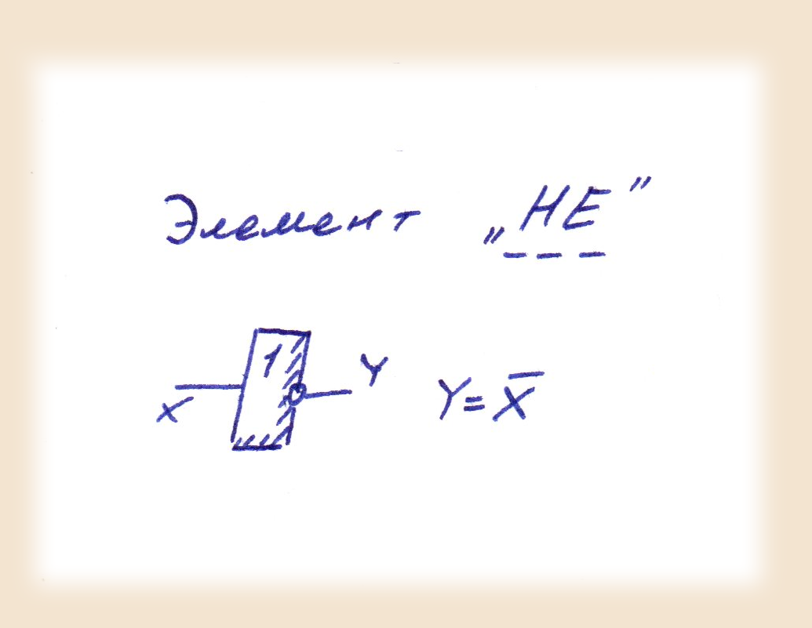
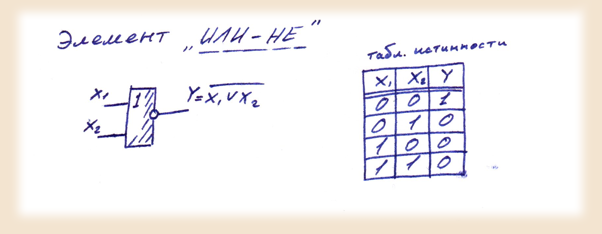
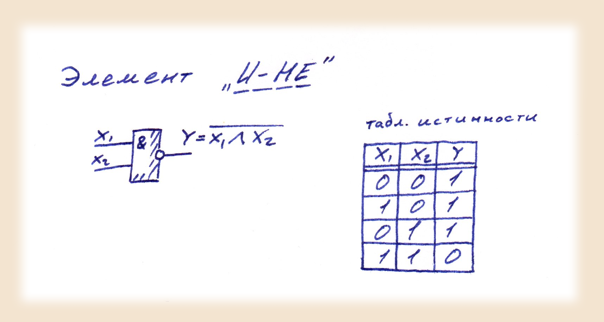
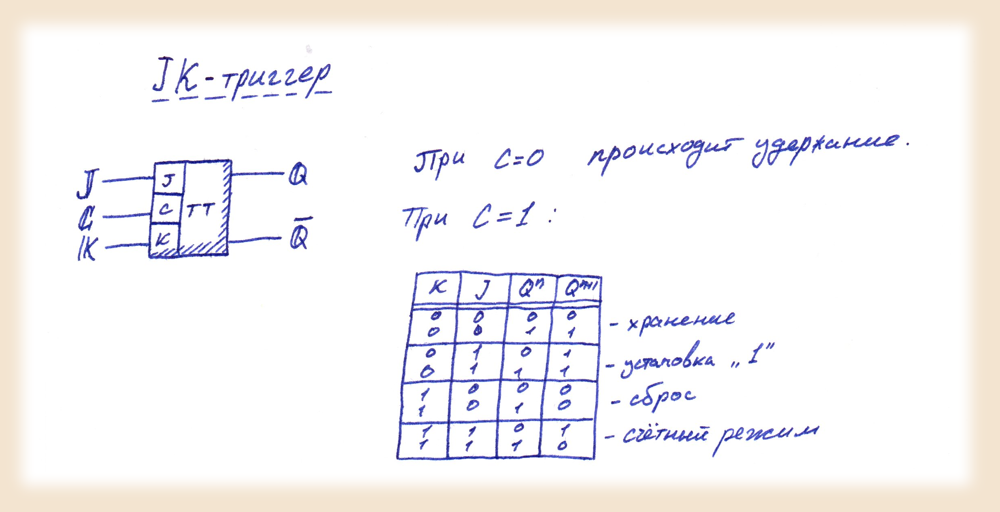
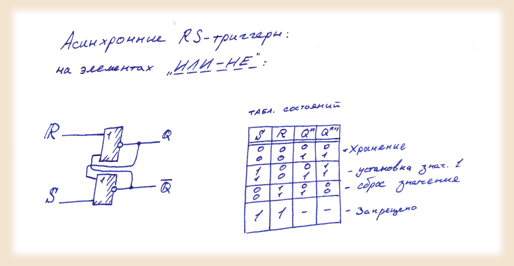
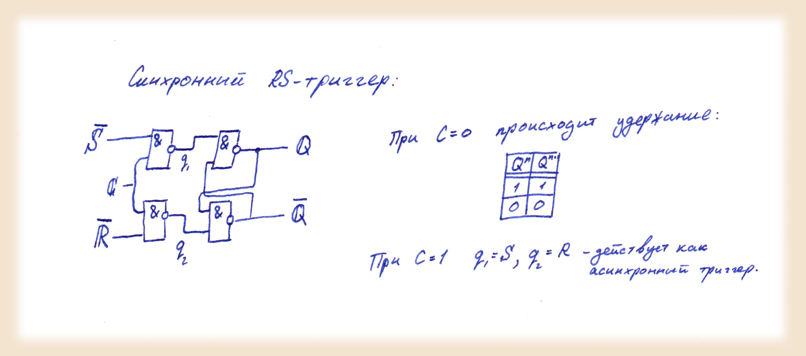

Постановка выполняемой задачи
-
В данной задаче нам необходимо:
- Построить на модели "TINA" и продемонстрировать работу асинхронного RS-триггера на логических элементах "ИЛИ-НЕ"
- Построить на модели "TINA" и продемонстрировать работу Синхронного RS-триггера на логических элементах "И-НЕ"
- Построить на модели "TINA" и продемонстрировать работу аcинхронного RS-триггера на микросхеме JK
Для выполнение данной работы вначале определим понятие триггер.
Так, триггер - это устройство, способное сохранять одно из двух устойчивых состояний и изменять его при определенном воздействии на его входы.
Воспользуемся логическими элементами, указанными в условии. Приведем их схематические обозначения, а также параметры:
  Помимо этого для подзадачи с воспользуемся также цельной схемой JK триггера:
Для построения триггеров будем использовать следующие схемы и параметры:
Для асинхронного RS триггера на элементах "ИЛИ-НЕ":
Для синхронного RS триггера на элементах "И-НЕ":
Реализацию RS триггера на JK схеме опишем в ходе решения, исходя из свойств этой схемы в модели TINA и параметров этого триггера описаных выше.